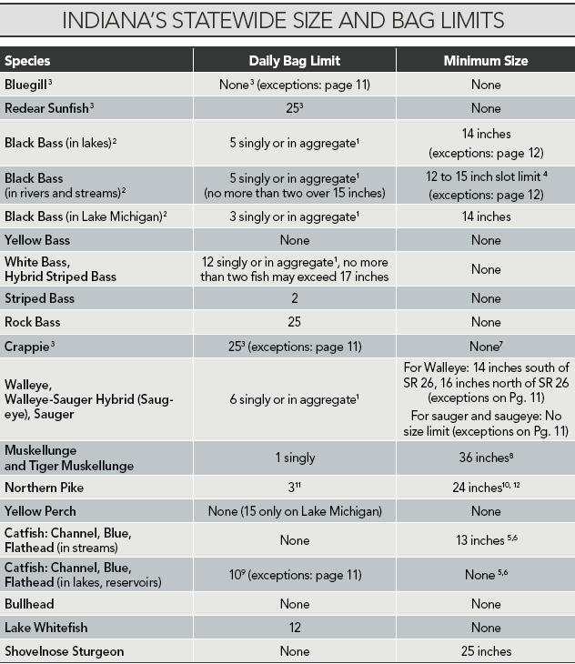
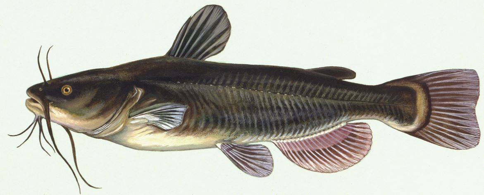

fish
文章目录
美国常见的淡水鱼

大嘴鲈鱼（largemouth bass）
一般分布在湖里及水流不急的河里，体色偏绿、黄，嘴巴张开后奇大，性情凶猛，会吞食一切比他体型稍小的活物，所以是很多钓鱼比赛的指定鱼种。同时它肉质鲜美、无小刺，所以也非常受业余爱好者喜欢。 大嘴鲈鱼
小嘴鲈鱼（smallmouth bass）
一般分布在水流较奇的河流，体色偏棕色。相比于大嘴鲈鱼很明显的就是嘴巴小了很多（其实就是正常尺寸），因为长期在水流湍急区域活动，肉质比大嘴更紧实更鲜美。 小嘴鲈鱼
条纹鲈鱼（striped bass）
本身是海鲈鱼，但是成熟后会到上游淡水河中繁殖后代，后来也被政府引进到一些大型湖泊和水库中，体型较上两种鲈鱼会大非常多。同样没有小刺，肉质鲜美，与上面两种鲈鱼相比也毫不逊色。 条纹鲈鱼
鲶鱼（catfish）
分布非常广，基本只要有鱼的地方就会有鲶鱼。鲶鱼因为有嘴边的胡须所以非常好辨认，它也分很多品种，比如channel catfish、blue catfish、flathead catfish等等，但因为catfish属于底层鱼类，食性也偏腐食性，所以在美国的野生鲶鱼不建议食用。  鲶鱼
鲤鱼（carp）
很多留学生对美国鲤鱼看法非常不一致，有人觉得好吃，也有人觉得巨难吃，其实最终原因是在美国有两大类鲤鱼。其一是早起从欧洲引入的common carp，这是一种运动垂钓鲤鱼，大的甚至长到30lb，肉质非常硬，很难吃。另一类就是美国在1970s引进的亚洲鲤鱼（asian carp）包含了草鱼（grass carp）、白鲢（silver carp）和花鲢（bighead carp），这类鲤鱼与国内的鲤鱼基本没有太大差别，腥线处理的好做出来味道也不差。不过现在亚洲鲤鱼因为入侵性太强有些泛滥，美国政府正在想办法控制。 鲤鱼
蓝鳃太阳鱼（bluegill）
太阳鱼的一种（sunfish），最容易钓起来的鱼，没有之一。诀窍就是用比较小号的钩子，因为bluegill的嘴很小。Bluegill繁殖很快所以我们钓上来的大多是体型较小的幼鱼，如果能钓上3-5年以上的成年鱼，做成一盘红烧还是很不错的，味道可以媲美鲫鱼却又没有小刺的鱼。
 bluegill
bluegill
刺盖太阳鱼（crappie）
不管用蚯蚓还是minnow都挺容易钓上，喜欢扎堆不动，即使上钩了也没有太多挣扎的一种鱼。肉质偏软，不过味道还是不错的。 crappie
大眼梭鲈鱼（walleye）
号称北美第一鲜美淡水鱼，在湖泊和河流都有分布，喜欢夜间进食，所以要钓的话需要入夜后进行。该鱼生命力奇差，缺氧后几乎“立即”死亡，所以钓上后需尽快处理。 walleye
狗鱼（northern pike & muskie）
这两种狗鱼非常相似，一般来说muskie在体型上会大很多成年可以长至4尺，而northern pike最多到40英寸而已，数量上也是northern pike多了许多，所以有幸钓上的应该多是northern pike。该鱼牙齿锋利，所以需要特制钓钩后需要加装steal leader再配合大磅数鱼线，上钩后挣扎会非常有力，需要多拖拽一段时间后才能上岸，因为这个特性该鱼深受钓友喜爱，但它肉质较硬且有小刺，不太适合食用。（PS：也有人说好吃） pike
鳟鱼（trout）
包含虹鳟（rainbow trout）、褐鳟（brown trout）、湖鳟（lake trout）等，属于三文鱼（salmon）的近亲，但切记该鱼不可以做刺身，因为淡水鱼类普遍携带寄生虫，必须全熟后方可食用。鳟鱼在上钩后有自己非常独特的“抖动式”挣扎，手感可以说非常有意思，所以也有很多钓友对此情有独钟。该鱼肉质与三文鱼类似因为含有虾青素而呈现粉色，不太适合清蒸，油煎的方式比较合适。
 rainbow trout
rainbow trout
吸口鱼（sucker）
长得与鲤鱼非常像，最大的区别就是嘴口朝下，一般也不会作为钓鱼target，偶尔会不小心上钩。属于底层鱼类，肉质较腥，不建议食用。 white sucker
雀鳝（gar）
活化石类型的鱼，体型巨大，野生的可以长到3米，性情凶猛，所以也非常适合喜欢钓大鱼的鱼友们垂钓。需要注意的是，该鱼脏器有毒，鱼卵有剧毒，肉质的话也偏硬所以不太建议食用。 gar
文章作者 Jeff Liu
上次更新 2019-05-14